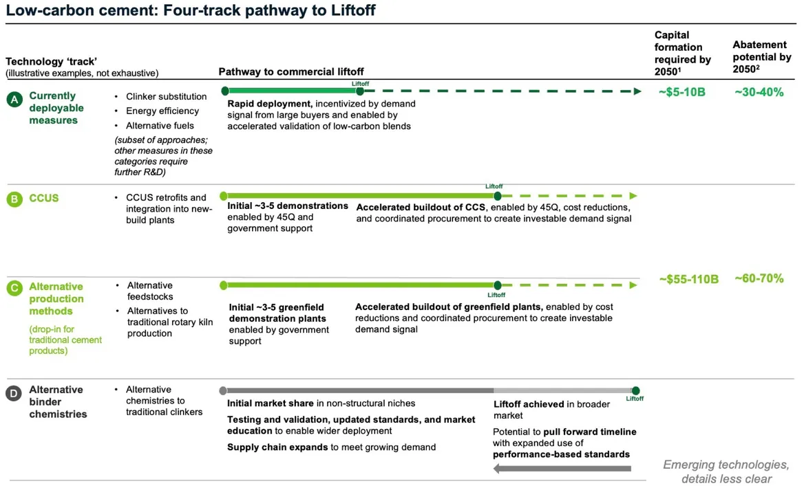
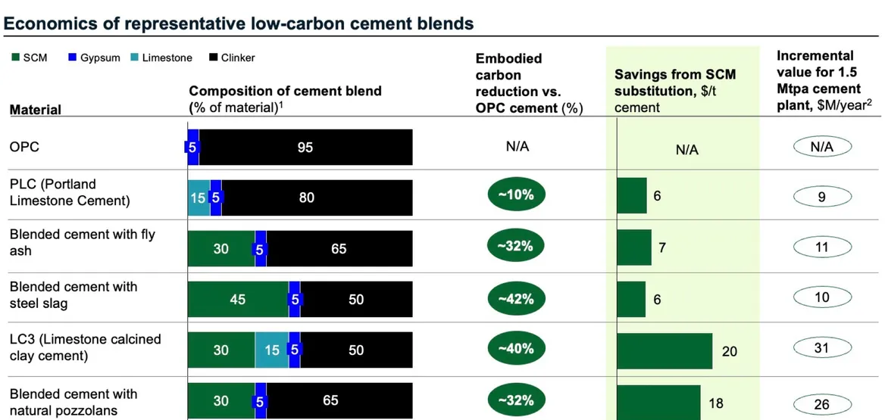

10 Cement decarbonisation
SCM = supplementary cementing materials
Lobet
“Our dream is to decarbonize cement, and we want to do it as fast as possible”
The chemical reaction at the heart of today’s cement-manufacturing process is a major reason why the production of this essential building material accounts for an estimated 7 percent of global carbon dioxide emissions from energy and industrial sources.
But a small group of tech entrepreneurs says they’ve found a better way. Cody Finke, co-founder and CEO of Brimstone Energy, is one of them.
Today, producers use limestone, a common rock, as the basis of cement. They mine it, grind it and then heat it up to temperatures roughly a quarter as hot as the surface of the sun. This drives carbon dioxide out of the rock and into the atmosphere.
Limestone is a form of calcium carbonate, a chemical compound with the formula \(CaCO_3\), made up of three main elements: calcium, carbon and oxygen. Extracting the calcium and oxygen needed for cement leaves behind the single carbon atom and two oxygen atoms — \(CO_2\). Fifty to 65 percent of the \(CO_2\) emissions from cement production result from the fact that the source rock is limestone, not from heating cement kilns to high temperatures.
Brimstone’s alternative recipe swaps out this limestone for calcium silicate rocks, which are also very common. The silicates contain the same calcium oxide, commonly known as lime. But “there is…no \(CO_2\) in the rock,”
Using an alternative source rock also allows Brimstone to lower the kiln temperatures — another way the company can reduce \(CO_2\) emissions. Typical cement production requires temperatures of approximately 900 degrees Celsius for one key part of the process and 1,450 degrees Celsius for the other. Brimstone’s process, in contrast, requires temperatures above 500ºC for only 20 percent of its heat energy.
Because of these lower temperature requirements, Brimstone can use electric kilns for most of its process instead of kilns fired by coal, petroleum coke or natural gas. For now, the company still expects to burn a fossil fuel for the hottest 20 percent of its process or use hydrogen if it’s available. It’s possible to electrify the entire process, Finke said; it’s just uneconomical to do so today.
Lobet (2021) Changing up the recipe to make low-carbon cement
St. John
“There are a lot of novel technologies out there that work, and work fine. But they’re not scalable, they’re not commercially viable — and usually it’s because the feedstock is not available in full volume, or not available where it’s needed.” “There are a lot of novel technologies out there that work, and work fine. But they’re not scalable, they’re not commercially viable — and usually it’s because the feedstock is not available in full volume, or not available where it’s needed.”
Cement and concrete production are responsible for 8 percent of human-caused carbon dioxide emissions worldwide, and novel SCMs like Terra’s offer one path to reducing that massive carbon footprint. SCMs lower emissions from concrete production because they reduce reliance on Portland cement — by far the most common type of cement made today and also the driver of concrete’s carbon impact. The production of Portland cement requires super-high temperatures that are achieved by burning fossil fuels, and the carbon-rich limestone used in its production also leaks \(CO_2\) into the air.
Major cement and concrete companies such as Cemex and Holcim already use millions of tons of SCMs today, mostly fly ash from coal plants and slag from steel mills, both to reduce their concrete’s carbon footprint and to strengthen the material. But the same climate imperatives that are pushing the cement industry to cut its carbon emissions are also driving the closure of coal plants and steel blast furnaces, making these components less ubiquitous and more expensive to get.
Terra \(CO_2\)’s SCM, by contrast, is made from a variety of silicate rocks, including granite, basalt, alluvial sand and gravel, glacial flood gravel and clay-sand mixtures. Silica rock for the most part doesn’t have any embodied \(CO_2\).” That’s in contrast to limestone, the primary ingredient of Portland cement, which “by weight is about 50 percent embodied \(CO_2\)” — carbon that’s released into the atmosphere when it’s processed into clinker, the precursor to Portland cement.
Terra \(CO_2\) puts these rocks into a reactor that heats them to their melting point, yielding glassy powders that can replace 25 to 40 percent of the Portland cement needed for different mixes of concrete. The company estimates that every ton of cement replaced by Terra’s SCM results in 70 percent lower carbon-dioxide emissions compared to pure Portland cement.
CarbonCure, a Canadian startup that injects carbon dioxide captured from other emitting sources into concrete, which both strengthens the concrete and stores the carbon, preventing it from entering the atmosphere. This practice can reduce the carbon footprint of concrete by roughly 5 to 15 percent, and it is relatively simple to integrate into how concrete is produced today.
Low-carbon SCMs tend to be the next step for cement-makers trying to cut their carbon emissions.
Fly ash is already supply-distressed now. By the end of the decade, it’s going to go away. And blast furnace slag is going away as well.
Cement makers such as Heidelberg Materials and Hoffman Green Cement Technologies are pursuing one SCM option known as calcined clays. This material is widely available in Asia and Africa, but not as much in North America and Europe, making it less suitable for those markets.
Other approaches that promise a completely zero-carbon replacement for Portland cement are in a more experimental phase and would require retooling the cement industry to bring to scale. Some examples include startups such as Sublime Systems and Chement, which are developing electrochemical processes to replace the high-heat methods used to make cement. More esoteric concepts include using living organisms to “grow” cement.
St. John (2023) Terra \(CO_2\) says its Texas factory will cut carbon and cost from cement
St. John
Holcim has managed to chip away at its emissions in recent years: Its 2022 annual report cited a 21 percent reduction in carbon emissions per unit of net sales from direct production and electricity consumption compared to the year before. The company has made progress largely because of a shift to lower-carbon cement and concrete products that reduce its use of clinker, the precursor material for cement, and by far the most emissions-intensive part of the industry. Crucially, costs have actually dropped along with emissions.
But not every solution to cement’s climate problem will present companies with such a clear-cut economic calculus. And while the U.S. Department of Energy estimates that more than a third of the industry’s emissions can be jettisoned using established technologies and processes like clinker substitution, the remainder of the solutions have yet to come into full focus.
Most uncertain of all is the pathway to eliminating what are called “process emissions,” which account for the majority of cement’s climate problem.
Process emissions are an unavoidable part of cement-making’s status quo. The core input of ordinary Portland cement — the product that makes up the vast majority of cement made today — is limestone, a mineral that’s about half calcium and half carbon and oxygen by chemical composition. When that limestone is converted to calcium oxide, the immediate precursor to clinker, the \(CO_2\) trapped inside the mineral is released into the atmosphere.
Eliminating these emissions means either finding novel, emissions-free ways to create ordinary Portland cement or a safe structural equivalent, or figuring out how to economically use carbon capture, utilization and sequestration (CCUS) technology to keep the \(CO_2\) generated from the manufacturing process from entering the atmosphere. Though plenty of startups, companies and researchers are hard at work on both methods, neither has, at this point, proven to be workable at the necessary scale.

The science and economics of cement substitution
The math is fairly simple on clinker substitution: The greater the amount of clinker that’s substituted with another material, the lower the carbon footprint per ton of cement that results.
By far the most widely adopted substitute is “Portland limestone cement,” which replaces up to 15 percent of clinker with ground-up limestone. Because that ground-up limestone hasn’t been processed in a way that releases its embedded carbon dioxide, this variety of cement yields an average 8 percent reduction in emissions-intensity compared to ordinary Portland cement.

A long list of supplementary cementing materials that can displace clinker and make up 30 to 45 percent of a cement mix. By far the most commonly used today are fly ash from coal plants and slag from steel mills.
The key to deploying clinker substitution at scale and keeping the economics positive are moving toward what we call next-generation substitutes. One promising “next-gen” substitute is calcined clays, a form of naturally occurring minerals.
Other next-gen supplementary cementing materials (SCMs) involve commonly available calcium silicate rock such as basalt, gabbro and other minerals. Because these rocks contain no carbon, they can be processed without releasing \(CO_2\).
New cements, new processes — a steeper path to progress
Reducing clinker use and working lower-carbon SCMs into cement mixes can have a major impact now — but outright replacing or revamping the production of ordinary Portland cement is what the industry needs to eventually reckon with.
There are dozens of startups and university and government research projects working to come up with alternatives to ordinary Portland cement. Some are even engaged in pilot-scale demonstrations. But none have yet been embraced by the cement industry as a viable option for revamping a single integrated cement manufacturing plant.
The challenge is that the chemistry of cement and concrete — the mix of cement and rocks, gravel and other materials that harden into forms and slabs — is incredibly complex.
While Portland cement is well understood, “there are still fundamental debates among scientists” on the nature of the chemical reactions that yield better or worse forms of concrete from different types of cement for use in different applications.
Meanwhile, the industry has become more fragmented in recent years, moving from large centralized cement manufacturing to a more diverse lineup of smaller ready-mix and precast concrete operations that serve a multitude of end users. Each party in this chain relies on being able to secure consistent supplies and types of products for different needs, with an array of different standards that are difficult to alter to allow for new products to get to market.
The original patent for ordinary Portland cement was issued in 1824, giving the world nearly 200 years to understand its fundamental material properties.
Fortera’s alternative cement is based on technology first developed back in the 2000s to mimic the process that leads to growth in coral reefs, but it’s just one of many contenders. Others include geopolymer chemistries like Cemex’s Vertua low-carbon concrete, magnesium oxides derived from magnesium silicate chemistries developed more than a decade ago by now-defunct U.K.-based startup Novacem, and the belite-ye’elimite-ferrite clinker being developed by Holcim.
Some methods for reinventing cement aim to forgo the high-temperature kilns altogether in favor of electrochemical processes. Sublime Systems and Chement are developing ways to use electrolyzers, like those used to make hydrogen from electricity and water, to dissolve and then extract the precursor compounds that make up cement.
There’s only a relatively small fraction of the cement market that can be replaced by alternative cements — “maybe at most 25 percent of the cement market,” according to Cody Finke, CEO of Brimstone, whose company is making a product that’s structurally and chemically identical to Portland cement. “We want to decarbonize the whole cement industry.”
It’s a worthwhile approach, but one that also remains far from guaranteed. Brimstone, the only startup to win industry approval that its alternative process results in ordinary Portland cement.
St. John (2023) To decarbonize cement, the industry needs a full transformation
Gallucci (2023) 6 innovative startups that are kicking CO2 out of cement and concrete